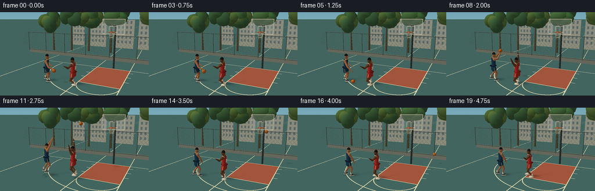
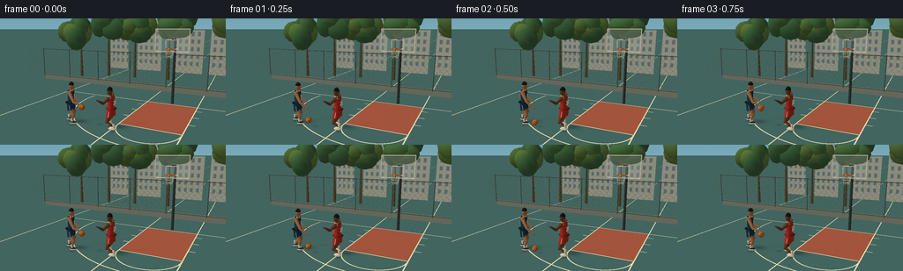

CODING AGENTS AS PIXEL WORLD MODELS
traex/GPT-6.1-Sol · instance_preservation_0035
点击播放 · 原生 RGB 像素
逐轮保存的候选
回放视频、检查图与代码变化。
每份候选均可单独播放。实际图片检查记录在下方工具轨迹中。
候选 01播放与检查图
点击播放 · 原生 RGB 像素


展开代码变化
--- 上一保存版本
+++ 本次保存版本
@@ -0,0 +1,399 @@
+from pathlib import Path
+import math, json
+import numpy as np
+from PIL import Image
+import artifact_io
+
+ROOT=Path(__file__).resolve().parent
+SPEC=json.loads((ROOT/'task_spec.json').read_text())
+W,H=SPEC['width']*3,SPEC['height']*3
+S=3
+C=np.array([5.,4.,10.]); target=np.array([0.,1.65,0.])
+F=target-C; F/=np.linalg.norm(F)
+R=np.cross(F,[0,1,0]);R/=np.linalg.norm(R)
+U=np.cross(R,F); focal=285*S
+LIGHT=np.array([-0.6,1.0,0.7]);LIGHT/=np.linalg.norm(LIGHT)
+rng=np.random.default_rng(12)
+
+def unit(v):
+ v=np.asarray(v,float);return v/max(np.linalg.norm(v),1e-9)
+def mix(a,b,t):return np.array(a)*(1-t)+np.array(b)*t
+def smooth(t):t=np.clip(t,0,1);return t*t*(3-2*t)
+
+class Mesh:
+ def __init__(self):self.items=[]
+ def add(self,v,faces,color,norm=None,alpha=1):
+ v=np.asarray(v,float); faces=np.asarray(faces,int)
+ if norm is None:
+ n=np.cross(v[faces[:,1]]-v[faces[:,0]],v[faces[:,2]]-v[faces[:,0]]);n/=np.maximum(np.linalg.norm(n,axis=1)[:,None],1e-8)
+ illum=.58+.42*np.maximum(n@LIGHT,0)
+ cols=np.array(color)[None,:]*illum[:,None]
+ self.items.append((v,faces,cols,None,alpha))
+ else:
+ illum=.50+.50*np.maximum(np.array(norm)@LIGHT,0)
+ cols=np.array(color)[None,:]*illum[:,None]
+ self.items.append((v,faces,cols,True,alpha))
+ def quad(self,p,col,alpha=1):self.add(p,[(0,1,2),(0,2,3)],col,alpha=alpha)
+ def sphere(self,center,radii,col,axis=None,n=12,m=8):
+ c=np.array(center);rad=np.array(radii);v=[];normal=[]
+ axis=np.eye(3) if axis is None else np.array(axis)
+ for j in range(m+1):
+ th=math.pi*j/m
+ for i in range(n):
+ ph=2*math.pi*i/n; q=np.array([math.sin(th)*math.cos(ph),math.cos(th),math.sin(th)*math.sin(ph)])
+ v.append(c+axis@(rad*q));normal.append(unit(axis@(q/rad)))
+ f=[]
+ for j in range(m):
+ for i in range(n):
+ a=j*n+i;b=j*n+(i+1)%n;d=(j+1)*n+i;e=(j+1)*n+(i+1)%n
+ f.extend([(a,d,b),(b,d,e)])
+ self.add(v,f,col,normal)
+ def tube(self,a,b,r1,r2,col,n=10):
+ a=np.array(a);b=np.array(b);d=unit(b-a);ref=[0,1,0] if abs(d[1])<.92 else [1,0,0]
+ u=unit(np.cross(d,ref));vv=np.cross(d,u);p=[];ns=[]
+ for q,r in [(a,r1),(b,r2)]:
+ for i in range(n):
+ normal=u*math.cos(2*math.pi*i/n)+vv*math.sin(2*math.pi*i/n)
+ p.append(q+r*normal);ns.append(normal)
+ f=[]
+ for i in range(n):
+ k=(i+1)%n;f.extend([(i,k,i+n),(k,k+n,i+n)])
+ # cap surfaces
+ p.extend([a,b]);ns.extend([-d,d])
+ for i in range(n):k=(i+1)%n;f.extend([(2*n,k,i),(2*n+1,i+n,k+n)])
+ self.add(p,f,col,ns)
+ def line(self,pts,r,col):
+ for a,b in zip(pts[:-1],pts[1:]):self.tube(a,b,r,r,col,n=6)
+
+
+def project(v):
+ q=v-C;z=q@F
+ return np.stack([W/2+focal*(q@R)/z,H/2-focal*(q@U)/z,z],axis=-1)
+
+def raster(mesh,img,depth):
+ for verts,faces,colors,gouraud,alpha in mesh.items:
+ proj=project(verts)
+ for j,inds in enumerate(faces):
+ p=proj[inds];
+ if np.any(p[:,2]<.1):continue
+ x0=max(0,int(np.floor(p[:,0].min())));x1=min(W-1,int(np.ceil(p[:,0].max())))
+ y0=max(0,int(np.floor(p[:,1].min())));y1=min(H-1,int(np.ceil(p[:,1].max())))
+ if x1<x0 or y1<y0:continue
+ xa,ya=p[0,:2];xb,yb=p[1,:2];xc,yc=p[2,:2]
+ den=(yb-yc)*(xa-xc)+(xc-xb)*(ya-yc)
+ if abs(den)<1e-6:continue
+ yy,xx=np.mgrid[y0:y1+1,x0:x1+1];xx=xx+.5;yy=yy+.5
+ a=((yb-yc)*(xx-xc)+(xc-xb)*(yy-yc))/den
+ b=((yc-ya)*(xx-xc)+(xa-xc)*(yy-yc))/den;c=1-a-b
+ inside=(a>=-.001)&(b>=-.001)&(c>=-.001)
+ inv=a/p[0,2]+b/p[1,2]+c/p[2,2];z=1/np.maximum(inv,1e-9)
+ localdep=depth[y0:y1+1,x0:x1+1];mask=inside&(z<localdep)
+ if not mask.any():continue
+ if gouraud:
+ col=(a[...,None]*colors[inds[0]]/p[0,2]+b[...,None]*colors[inds[1]]/p[1,2]+c[...,None]*colors[inds[2]]/p[2,2])/inv[...,None]
+ else:col=colors[j]
+ view=img[y0:y1+1,x0:x1+1]
+ if np.ndim(col)==1:view[mask]=view[mask]*(1-alpha)+np.clip(col,0,255)*alpha
+ else:view[mask]=view[mask]*(1-alpha)+np.clip(col[mask],0,255)*alpha
+ if alpha>.5:localdep[mask]=z[mask]
+
+# Ground plane: inverse projection gives stable fine asphalt, accurate painted markings.
+yy,xx=np.mgrid[0:H,0:W];
+ray=F[None,None,:]+((xx-W/2)/focal)[...,None]*R-((yy-H/2)/focal)[...,None]*U
+q=-C[1]/ray[:,:,1];ground=C+q[:,:,None]*ray
+GX,GZ=ground[:,:,0],ground[:,:,2];valid=(q>0)&(GZ<12)
+base=np.empty((H,W,3),float)
+grad=np.clip(yy/H,0,1)[...,None]
+base[:]=np.array([108,163,191])*(1-grad)+np.array([226,222,194])*grad
+asphalt=np.zeros_like(base);asphalt[:]=[63,100,101]
+# Weathered, painted brick-red lane and pale boundary markings.
+key=(np.abs(GX-2)<1.35)&(GZ>-3.05)&(GZ<.75)
+asphalt[key]=[154,84,64]
+noise=rng.normal(0,1.3,(H,W))+1.2*np.sin(GX*43+GZ*31)+.8*np.sin(GX*149-GZ*91)
+asphalt+=noise[...,None]
+lines=np.zeros((H,W),bool)
+def stripe(cond):
+ global lines;lines|=cond
+stripe((np.abs(GZ+3.05)<.027)&(GX>-4.8)&(GX<6.0))
+stripe((np.abs(GX+4.8)<.028)|(np.abs(GX-6.0)<.028))
+stripe((np.abs(GX-2-1.35)<.025)|(np.abs(GX-2+1.35)<.025))
+stripe((np.abs(GZ-.75)<.027)&(np.abs(GX-2)<1.36))
+d=np.sqrt((GX-2)**2+(GZ-.75)**2)
+stripe((np.abs(d-1.35)<.026)&(GZ>=.75))
+d3=np.sqrt((GX-2)**2+(GZ+2.1)**2)
+stripe((np.abs(d3-4.7)<.027)&(GZ>-2.8))
+stripe((np.abs(GZ-5.6)<.028))
+# lane tick marks
+for z in [-2.4,-1.4,-.4]:stripe((np.abs(GZ-z)<.023)&(np.abs(np.abs(GX-2)-1.5)<.15))
+asphalt[lines]=[222,218,182]
+base[valid]=asphalt[valid];base_depth=np.where(valid,q,np.inf)
+
+# Detailed, static park scene and basketball equipment.
+static=Mesh()
+# low wall beyond the court
+static.quad([[-9,0,-5.7],[9,0,-5.7],[9,.38,-5.7],[-9,.38,-5.7]],[120,127,119])
+static.tube([-9,.38,-5.7],[9,.38,-5.7],.035,.035,[160,157,140])
+# Distant warm apartment blocks, partially obscured by trees.
+for x,height,width in [(-6,4.3,2.0),(-2.8,4.8,2.4),(1,3.9,2.4),(4,4.9,2.5),(7,4.0,2.2)]:
+ z=-13.5
+ static.quad([[x-width/2,0,z],[x+width/2,0,z],[x+width/2,height,z],[x-width/2,height,z]],[166,173,163])
+ for y in np.arange(.7,height-.1,.67):
+ for wx in np.arange(x-width/2+.25,x+width/2-.1,.53):
+ static.quad([[wx,y,z+.015],[wx+.24,y,z+.015],[wx+.24,y+.37,z+.015],[wx,y+.37,z+.015]],[104,128,138])
+# tree trunks and broad, irregular crowns
+for x,z,h in [(-7,-8,3.7),(-4.9,-9.0,4.5),(-2.7,-9.5,4.0),(.1,-9.6,4.5),(4.8,-9,4.4),(7.8,-8,4.2)]:
+ static.tube([x,0,z],[x,h-.7,z],.14,.055,[94,83,58])
+ for k in range(10):
+ off=rng.uniform(-.9,.9,3);off[1]*=.55
+ center=np.array([x,h,z])+off
+ static.sphere(center,[rng.uniform(.65,1.1),rng.uniform(.7,1.0),rng.uniform(.6,1.)],rng.choice([[60,102,66],[69,113,66],[90,123,65],[79,110,58]]),n=9,m=6)
+# dark chain-link fence
+for x in np.arange(-9,9.01,2.5):static.tube([x,.3,-5.6],[x,2.5,-5.6],.024,.024,[66,82,79])
+for y in [.4,2.45]:static.tube([-9,y,-5.6],[9,y,-5.6],.023,.023,[79,91,85])
+for x in np.arange(-11,11,.36):
+ # diamond crossing lattice, clip at fence height
+ static.tube([x,.43,-5.6],[x+1.95,2.4,-5.6],.005,.005,[108,123,107],n=5)
+ static.tube([x,2.4,-5.6],[x+1.95,.43,-5.6],.005,.005,[108,123,107],n=5)
+# basket support and backboard frame
+static.tube([2,0,-3.25],[2,3.5,-3.25],.073,.066,[51,60,62])
+static.tube([2,3.5,-3.25],[2,3.5,-2.55],.058,.05,[62,69,70])
+# slightly tinted glass panel, white perimeter and target square
+static.quad([[1.16,2.88,-2.57],[2.84,2.88,-2.57],[2.84,4.0,-2.57],[1.16,4.0,-2.57]],[186,206,203],alpha=.32)
+static.line([[1.16,2.88,-2.54],[2.84,2.88,-2.54],[2.84,4.0,-2.54],[1.16,4.0,-2.54],[1.16,2.88,-2.54]],.022,[236,233,211])
+static.line([[1.70,3.02,-2.525],[2.30,3.02,-2.525],[2.30,3.47,-2.525],[1.70,3.47,-2.525],[1.70,3.02,-2.525]],.019,[246,241,222])
+static.tube([2,3.05,-2.54],[2,3.05,-2.12],.018,.018,[205,91,42])
+RIM=np.array([2.,3.05,-2.13])
+# ring drawn separately each frame to occlude net and ball correctly
+
+def net(mesh,t):
+ pulse=max(0,1-abs(t-3.4)/.4)*.07
+ for j in range(12):
+ a=j*2*math.pi/12;pts=[]
+ for k in range(6):
+ s=k/5;rad=.235*(1-s)+(.13+pulse)*s
+ ph=a+s*.38;pts.append(RIM+np.array([rad*math.cos(ph),-.43*s,rad*math.sin(ph)]))
+ mesh.line(pts,.006,[225,220,196])
+ for s in [.28,.56,.85,1.]:
+ rad=.235*(1-s)+(.13+pulse)*s
+ mesh.line([RIM+np.array([rad*math.cos(a+s*.38),-.43*s,rad*math.sin(a+s*.38)]) for a in np.linspace(0,2*math.pi,25)],.005,[218,216,196])
+ mesh.line([RIM+[.24*math.cos(a),0,.24*math.sin(a)] for a in np.linspace(0,2*math.pi,37)],.016,[225,98,37])
+
+# Anatomically articulated players, with fabric, hair, facial detail and sneakers.
+SKINS=[[177,116,78],[106,66,43]]
+JERSEYS=[[24,61,91],[187,48,41]]
+TRIMS=[[229,199,121],[247,235,204]]
+
+def digit(mesh,center,right,up,forward,num,size,color):
+ patterns={'7':[[(0,1),(1,1),(.36,0)]], '2':[[(0,.85),(.2,1),(.8,1),(1,.8),(1,.6),(0,0),(1,0)]], '3':[[(0,1),(.8,1),(1,.75),(.65,.52),(.95,.3),(.8,0),(0,0)]]}
+ for k,d in enumerate(num):
+ for line in patterns[d]:
+ pts=[center+right*((x+k*1.3-(len(num)*1.3-.3)/2)*size)+up*((y-.5)*size*1.5)+forward*.006 for x,y in line]
+ mesh.line(pts,.009,color)
+
+# global forward maps local x right, local z front, local y vertical.
+def person(mesh,idx,pos,fwd,phase,t):
+ fwd=unit([fwd[0],0,fwd[2]]);side=np.array([fwd[2],0,-fwd[0]]);up=np.array([0.,1.,0.]);basis=np.stack([side,up,fwd],axis=1)
+ skin=SKINS[idx]; jersey=JERSEYS[idx];trim=TRIMS[idx]
+ jump=0; crouch=.11
+ if idx==0:
+ if t<1.65:crouch=.15+.025*math.sin(t*8)
+ elif t<2.25:crouch=.18*(1-smooth((t-1.65)/.6))
+ elif t<2.9:jump=.34*math.sin(math.pi*(t-2.25)/.65);crouch=.01
+ else:crouch=.05
+ else:
+ crouch=.23+.025*math.sin(t*7)
+ if 2.25<t<2.95:jump=.23*math.sin(math.pi*(t-2.25)/.7);crouch=.03
+ if t>3.0:crouch=.1
+ pos=np.array(pos); pos[1]+=jump
+ def P(x,y,z=0):return pos+basis@np.array([x,y-crouch,z])
+ pelvis=P(0,1.03); neck=P(0,1.64,.055)
+ # Feet planted in an athletic stance and bent knees. Directional shuffle.
+ step=.035*math.sin(t*8+idx*1.7)
+ hips=[P(-.13,1.01),P(.13,1.01)]
+ feet=[pos+basis@np.array([-.24,.075,.11+step]),pos+basis@np.array([.25,.075,-.13-step])]
+ knees=[P(-.23,.57,.16),P(.24,.57,.10)]
+ if jump>0:
+ feet=[pos+basis@np.array([-.19,.10,-.08]),pos+basis@np.array([.18,.12,-.14])]
+ for h,k,ft in zip(hips,knees,feet):
+ mesh.tube(h,k,.105,.074,skin)
+ mesh.sphere(k,[.078,.083,.077],skin,n=10,m=6)
+ ankle=ft+up*.11-fwd*.02
+ mesh.tube(k,ankle,.064,.040,skin)
+ mesh.tube(ankle-up*.05,ankle+up*.095,.045,.050,[232,232,213])
+ # sneaker sole, colored heel and detailed toe cap
+ shoeaxis=basis
+ mesh.sphere(ft+fwd*.04,[.083,.050,.165],[225,222,203],shoeaxis,n=12,m=6)
+ mesh.sphere(ft+up*.028+fwd*.035,[.071,.058,.144],[38,48,53] if idx==0 else [230,220,197],shoeaxis,n=12,m=6)
+ mesh.tube(ft+side*.068-up*.003-fwd*.055,ft+side*.068+fwd*.104,.009,.009,trim,n=5)
+ for z in [.03,.068,.106]:mesh.tube(ft+up*.071+fwd*z-side*.043,ft+up*.071+fwd*z+side*.043,.006,.006,[228,228,217],n=5)
+ # shorts: separate flared legs with side stripes
+ for sign in [-1,1]:
+ center=P(sign*.135,.94)
+ mesh.tube(center+up*.12,center-up*.17+fwd*.035,.132,.151,jersey,n=12)
+ mesh.tube(P(sign*.26,1.01),P(sign*.29,.78,.033),.013,.013,trim,n=6)
+ mesh.tube(P(0,1.09),P(0,1.065),.217,.217,[19,31,43] if idx==0 else [128,32,28],n=14)
+ # jersey ring construction, open armholes implied by shoulder separation
+ verts=[];norms=[];rings=[(1.07,.21,.12),(1.30,.237,.13),(1.52,.268,.14),(1.59,.235,.125)]
+ for y,rx,rz in rings:
+ for a in np.linspace(0,2*math.pi,16,endpoint=False):
+ verts.append(P(rx*math.cos(a),y,rz*math.sin(a)+.025));norms.append(unit(basis@np.array([math.cos(a),.08,math.sin(a)])))
+ faces=[]
+ for j in range(3):
+ for i in range(16):k=(i+1)%16;faces.extend([(j*16+i,(j+1)*16+i,j*16+k),(j*16+k,(j+1)*16+i,(j+1)*16+k)])
+ mesh.add(verts,faces,jersey,norms)
+ # neck, collar rim and shoulder trim
+ mesh.tube(P(0,1.56,.038),P(0,1.72,.05),.064,.067,skin)
+ mesh.line([P(.087*math.cos(a),1.595,.065+.075*math.sin(a)) for a in np.linspace(0,2*math.pi,21)],.012,trim)
+ for s in [-1,1]:mesh.line([P(s*.225,1.58,-.075),P(s*.255,1.555,.03),P(s*.225,1.49,.126)],.012,trim)
+ digit(mesh,P(0,1.34,.16),side,up,fwd,'7' if idx==0 else '23',.094,trim)
+ digit(mesh,P(0,1.34,-.132),-side,up,-fwd,'7' if idx==0 else '23',.103,trim)
+ # fine jersey creases
+ for s in [-1,1]:mesh.line([P(s*.15,1.11,.122),P(s*.19,1.20,.116)],.003, np.array(jersey)*.74)
+ # Head: adult proportions, chin, brow, small eyes, prominent nose, ears.
+ hc=P(0,1.805,.062)
+ mesh.sphere(hc,[.116,.161,.111],skin,basis,n=16,m=12)
+ mesh.sphere(hc-up*.095+fwd*.026,[.088,.065,.092],skin,basis,n=12,m=8)
+ for sign in [-1,1]:
+ mesh.sphere(hc+side*sign*.119-up*.01,[.026,.042,.026],skin,basis,n=8,m=6)
+ eye=hc+side*sign*.042+up*.021+fwd*.102
+ mesh.sphere(eye,[.023,.009,.011],[225,216,195],basis,n=8,m=6)
+ mesh.sphere(eye+fwd*.007,[.008,.008,.006],[28,26,24],basis,n=8,m=6)
+ mesh.line([eye-side*.023+up*.020,eye+side*.023+up*.024],.006,[52,40,31])
+ mesh.sphere(hc+fwd*.123-up*.005,[.021,.033,.032],np.array(skin)*1.06,basis,n=10,m=7)
+ mesh.line([hc+fwd*.108-up*.063-side*.031,hc+fwd*.117-up*.066,hc+fwd*.108-up*.063+side*.031],.006,[95,56,42] if idx==0 else [58,35,29])
+ # close-cropped hair cap, leaving forehead visible
+ hv=[];hn=[]
+ for j in range(7):
+ th=(math.pi*.45)*j/6
+ for i in range(16):
+ a=2*math.pi*i/16;n=np.array([math.sin(th)*math.cos(a),math.cos(th),math.sin(th)*math.sin(a)])
+ hv.append(hc+basis@(n*np.array([.12,.166,.115])));hn.append(basis@n)
+ hf=[]
+ for j in range(6):
+ for i in range(16):k=(i+1)%16;hf.extend([(j*16+i,(j+1)*16+i,j*16+k),(j*16+k,(j+1)*16+i,(j+1)*16+k)])
+ mesh.add(hv,hf,[29,28,27] if idx==0 else [24,24,23],hn)
+ # elbows / wrists, motion in world coordinates
+ shoulders=[P(-.278,1.54,.035),P(.278,1.54,.035)]
+ if idx==0:
+ if t<1.65:
+ bounce=(.5+.5*math.cos(2*math.pi*t/.8))
+ e0=P(-.46,1.20,.24);w0=P(-.49,.98+.14*bounce,.49)
+ e1=P(.40,1.26,.0);w1=P(.33,1.08,.28)
+ else:
+ shot=smooth((t-1.65)/.60)
+ e0=mix(P(-.39,1.18,.33),P(-.25,1.85,.22),shot)
+ e1=mix(P(.38,1.24,.33),P(.22,1.86,.23),shot)
+ w0=mix(P(-.12,1.34,.53),P(-.10,2.20,.40),shot)
+ w1=mix(P(.12,1.34,.53),P(.09,2.23,.43),shot)
+ if t>2.90:
+ relax=smooth((t-2.9)/.65)
+ e0=mix(e0,P(-.34,1.23,.22),relax);e1=mix(e1,P(.36,1.27,.19),relax)
+ w0=mix(w0,P(-.31,1.03,.30),relax);w1=mix(w1,P(.30,1.06,.33),relax)
+ else:
+ defend=smooth((t-1.6)/.55)*(1-smooth((t-2.9)/.65))
+ e0=mix(P(-.45,1.43,.13),P(-.32,1.92,.07),defend)
+ w0=mix(P(-.66,1.52,.20),P(-.28,2.26,.08),defend)
+ e1=mix(P(.44,1.39,.18),P(.35,1.76,.12),defend)
+ w1=mix(P(.68,1.54,.26),P(.48,2.02,.12),defend)
+ for s,e,w in zip(shoulders,[e0,e1],[w0,w1]):
+ mesh.sphere(s,[.087,.098,.085],skin,n=10,m=6)
+ mesh.tube(s,e,.079,.054,skin)
+ mesh.sphere(e,[.055,.055,.057],skin,n=10,m=6)
+ mesh.tube(e,w,.057,.034,skin)
+ direction=unit(w-e);palm=w+direction*.048
+ mesh.sphere(palm,[.045,.062,.029],skin,np.stack([side,direction,unit(np.cross(side,direction))],axis=1),n=9,m=6)
+ for finger in [-1.5,-.5,.5,1.5]:
+ root=palm+side*finger*.016+direction*.041
+ end=root+direction*(.048-.006*abs(finger))+fwd*.018
+ mesh.tube(root,end,.009,.006,skin,n=6)
+ mesh.tube(w+side*.032,palm+side*.056+direction*.02,.012,.009,skin,n=6)
+ # sweatband on red player's forearm
+ if idx==1:mesh.tube(mix(e0,w0,.81),mix(e0,w0,.9),.043,.040,[232,225,204],n=10)
+ return {'pos':pos,'jump':jump,'palm':(w0+w1)/2+unit(w1-e1)*.06,'dribble':w0+unit(w0-e0)*.04,'head':hc,'feet':feet}
+
+
+def motion(t):
+ # brief controlled lateral movement; maintain two consistent instances.
+ a=np.array([-1.25+.10*math.sin(t*1.8),0,1.55-.12*smooth((t-.6)/1.3)])
+ b=np.array([.55+.12*math.sin(t*2.0+.5),0,1.35-.20*smooth((t-1.8)/.8)])
+ if t>3.5:
+ follow=smooth((t-3.5)/1.2)
+ a+=np.array([.24,0,-.28])*follow;b+=np.array([.45,0,-.60])*follow
+ f0=unit(mix([.92,0,-.39],RIM-np.array([a[0],3.05,a[2]]),smooth((t-1.45)/.75)))
+ f1=unit(a-b)
+ return a,b,f0,f1
+
+
+def basketball(mesh,center,t):
+ rad=.122
+ mesh.sphere(center,[rad]*3,[213,111,37],n=24,m=16)
+ # Three great-circle seams, with slow visible spin.
+ axis=unit([.35,.8,.45]);ang=t*3.5
+ K=np.array([[0,-axis[2],axis[1]],[axis[2],0,-axis[0]],[-axis[1],axis[0],0]])
+ rot=np.eye(3)+math.sin(ang)*K+(1-math.cos(ang))*(K@K)
+ for i in range(3):
+ pts=[]
+ for a in np.linspace(0,2*math.pi,49):
+ q=np.zeros(3);q[i]=math.cos(a);q[(i+1)%3]=math.sin(a)
+ pts.append(center+rot@q*(rad+.0009))
+ mesh.line(pts,.0037,[59,41,24])
+
+# Pre-render static geometry exactly once.
+raster(static,base,base_depth)
+
+
+def shadow(img,at,rx,rz,strength):
+ x,z=at[0],at[2]
+ d=((GX-x)/rx)**2+((GZ-z)/rz)**2
+ shade=1-strength*np.exp(-d*1.8)
+ mask=valid & (base_depth==q)
+ img[mask]*=shade[mask,None]
+
+# End of gather for exact continuity at the shot release.
+release_t=2.25
+a,b,f0,f1=motion(release_t)
+dummy=Mesh();release=person(dummy,0,a,f0,None,release_t)['palm']+np.array([0,.115,0])
+flight=1.12
+# Parabolic path goes through the center of the hoop.
+velocity=(RIM-release)/flight+np.array([0,4.7*flight/2,0])
+frames=[]
+for k in range(SPEC['frames']):
+ t=k/SPEC['fps'];mesh=Mesh();a,b,f0,f1=motion(t)
+ p0=person(mesh,0,a,f0,None,t);p1=person(mesh,1,b,f1,None,t)
+ if t<1.65:
+ # floor impacts at the bottom of the basketball, twice during the dribble.
+ hand=p0['dribble'];s=.5+.5*math.cos(2*math.pi*t/.8)
+ center=hand+f0*.045
+ center[1]=.126+(hand[1]-.10-.126)*s
+ elif t<2.25:
+ center=p0['palm']+np.array([0,.115,0])
+ else:
+ tau=t-2.25
+ if tau<=flight+.45:
+ center=release+velocity*tau+np.array([0,-4.7*tau*tau/2,0])
+ else:
+ hit=flight+.45
+ # falling ball clears the net and rebounds softly off the court.
+ floor_t=(velocity[1]+math.sqrt(velocity[1]**2+2*4.7*(release[1]-.122)))/4.7
+ if tau<floor_t:center=release+velocity*tau+np.array([0,-4.7*tau*tau/2,0])
+ else:
+ u=tau-floor_t;impact=release+velocity*floor_t+np.array([0,-4.7*floor_t*floor_t/2,0])
+ center=impact+np.array([velocity[0]*u*.65,2.05*u-2.35*u*u,velocity[2]*u*.65]);center[1]=max(.122,center[1])
+ img=base.copy();depth=base_depth.copy()
+ for p in [p0,p1]:
+ root=p['pos'];shadow(img,root+np.array([.24,0,-.30]),.42+.3*p['jump'],.32+.2*p['jump'],.22)
+ for ft in p['feet']:shadow(img,[ft[0],0,ft[2]],.13,.19,.22*(1-.7*p['jump']))
+ # cast elongated sun shadows off each player's body
+ for p in [p0,p1]:
+ for hh in np.linspace(.3,1.65,7):
+ foot=p['pos']-LIGHT/LIGHT[1]*hh;shadow(img,foot,.18,.19,.025)
+ shadow(img,center-np.array([LIGHT[0],0,LIGHT[2]])/LIGHT[1]*center[1],.13+center[1]*.05,.12+center[1]*.05,.14)
+ net(mesh,t);basketball(mesh,center,t)
+ raster(mesh,img,depth)
+ # Warm cinematic color finish; restrained grain and antialiasing.
+ img=np.clip(img*np.array([1.045,1.015,.965])+np.array([1,0,-1]),0,255)
+ frame=Image.fromarray(img.astype(np.uint8)).resize((SPEC['width'],SPEC['height']),Image.Resampling.LANCZOS)
+ frames.append(np.array(frame))
+ print(f'frame {k:02d} t={t:.2f} ball={np.round(center,2)}',flush=True)
+artifact_io.save(np.stack(frames),ROOT)
+print('Saved 20 RGB frames and viewer artifacts.')
可观测工具轨迹
实际执行的命令与返回图片。
命令 1exit 0
/bin/bash -lc 'ls -la && cat prompt.txt && cat GENERATION_RULES.md && cat task_spec.json'
命令 2exit 0
/bin/bash -lc "cat artifact_io.py && python - <<'PY' import importlib.util for m in ['numpy','PIL','cv2']: print(m, bool(importlib.util.find_spec(m))) PY"
命令 3exit 0
/bin/bash -lc "python - <<'PY' import numpy as np C=np.array([5.,3.7,10.]);T=np.array([0.,1.2,0.]);F=(T-C);F/=np.linalg.norm(F);R=np.cross(F,[0,1,0]);R/=np.linalg.norm(R);U=np.cross(R,F) for p in [(-1,0,2),(-1,2,2),(1,0,1.7),(1,2,1.7),(2,3.05,-2),(2,0,-2),(-5,0,-5),(5,0,-5)]: q=np.array(p)-C;d=q@F;print(p,128+300*(q@R)/d,72-300*(q@U)/d,d) PY"
命令 4exit 0
/bin/bash -lc "python - <<'PY' import numpy as np C=np.array([5.,3.7,10.]);T=np.array([0.,1.2,0.]);F=T-C;F/=np.linalg.norm(F);R=np.cross(F,[0,1,0]);R/=np.linalg.norm(R);U=np.cross(R,F) for p in [(2,4.2,-2.65),(-.3,4,-.1),(-1.25,1.92,1.8),(-1.25,0,1.8)]: q=np.array(p)-C;d=q@F;print(p,128+305*q@R/d,72-305*q@U/d) PY"
命令 5exit 0
/bin/bash -lc "python - <<'PY' import numpy as np C=np.array([5.,4.0,10.]);T=np.array([0.,1.65,0.]);F=T-C;F/=np.linalg.norm(F);R=np.cross(F,[0,1,0]);R/=np.linalg.norm(R);U=np.cross(R,F) for p in [(-1,0,1.4),(-1,1.98,1.4),(1,0,1.2),(1,2,1.2),(2,3.05,-2),(2,4.13,-2.5),(-.3,3.95,-.1),(-5,0,-5),(5,0,-5)]: q=np.array(p)-C;d=q@F;print(p,128+285*(q@R)/d,72-285*(q@U)/d) PY"
命令 6exit 0
/bin/bash -lc "cat > generate.py <<'PY'
from pathlib import Path
import math, json
import numpy as np
from PIL import Image
import artifact_io
ROOT=Path(__file__).resolve().parent
SPEC=json.loads((ROOT/'task_spec.json').read_text())
W,H=SPEC['width']*3,SPEC['height']*3
S=3
C=np.array([5.,4.,10.]); target=np.array([0.,1.65,0.])
F=target-C; F/=np.linalg.norm(F)
R=np.cross(F,[0,1,0]);R/=np.linalg.norm(R)
U=np.cross(R,F); focal=285*S
LIGHT=np.array([-0.6,1.0,0.7]);LIGHT/=np.linalg.norm(LIGHT)
rng=np.random.default_rng(12)
def unit(v):
v=np.asarray(v,float);return v/max(np.linalg.norm(v),1e-9)
def mix(a,b,t):return np.array(a)*(1-t)+np.array(b)*t
def smooth(t):t=np.clip(t,0,1);return t*t*(3-2*t)
class Mesh:
def __init__(self):self.items=[]
def add(self,v,faces,color,norm=None,alpha=1):
v=np.asarray(v,float); faces=np.asarray(faces,int)
if norm is None:
n=np.cross(v[faces[:,1]]-v[faces[:,0]],v[faces[:,2]]-v[faces[:,0]]);n/=np.maximum(np.linalg.norm(n,axis=1)[:,None],1e-8)
illum=.58+.42*np.maximum(n@LIGHT,0)
cols=np.array(color)[None,:]*illum[:,None]
self.items.append((v,faces,cols,None,alpha))
else:
illum=.50+.50*np.maximum(np.array(norm)@LIGHT,0)
cols=np.array(color)[None,:]*illum[:,None]
self.items.append((v,faces,cols,True,alpha))
def quad(self,p,col,alpha=1):self.add(p,[(0,1,2),(0,2,3)],col,alpha=alpha)
def sphere(self,center,radii,col,axis=None,n=12,m=8):
c=np.array(center);rad=np.array(radii);v=[];normal=[]
axis=np.eye(3) if axis is None else np.array(axis)
for j in range(m+1):
th=math.pi*j/m
for i in range(n):
ph=2*math.pi*i/n; q=np.array([math.sin(th)*math.cos(ph),math.cos(th),math.sin(th)*math.sin(ph)])
v.append(c+axis@(rad*q));normal.append(unit(axis@(q/rad)))
f=[]
for j in range(m):
for i in range(n):
a=j*n+i;b=j*n+(i+1)%n;d=(j+1)*n+i;e=(j+1)*n+(i+1)%n
f.extend([(a,d,b),(b,d,e)])
self.add(v,f,col,normal)
def tube(self,a,b,r1,r2,col,n=10):
a=np.array(a);b=np.array(b);d=unit(b-a);ref=[0,1,0] if abs(d[1])<.92 else [1,0,0]
u=unit(np.cross(d,ref));vv=np.cross(d,u);p=[];ns=[]
for q,r in [(a,r1),(b,r2)]:
for i in range(n):
normal=u*math.cos(2*math.pi*i/n)+vv*math.sin(2*math.pi*i/n)
p.append(q+r*normal);ns.append(normal)
f=[]
for i in range(n):
k=(i+1)%n;f.extend([(i,k,i+n),(k,k+n,i+n)])
# cap surfaces
p.extend([a,b]);ns.extend([-d,d])
for i in range(n):k=(i+1)%n;f.extend([(2*n,k,i),(2*n+1,i+n,k+n)])
self.add(p,f,col,ns)
def line(self,pts,r,col):
for a,b in zip(pts[:-1],pts[1:]):self.tube(a,b,r,r,col,n=6)
def project(v):
q=v-C;z=q@F
return np.stack([W/2+focal*(q@R)/z,H/2-focal*(q@U)/z,z],axis=-1)
def raster(mesh,img,depth):
for verts,faces,colors,gouraud,alpha in mesh.items:
proj=project(verts)
for j,inds in enumerate(faces):
p=proj[inds];
if np.any(p[:,2]<.1):continue
x0=max(0,int(np.floor(p[:,0].min())));x1=min(W-1,int(np.ceil(p[:,0].max())))
y0=max(0,int(np.floor(p[:,1].min())));y1=min(H-1,int(np.ceil(p[:,1].max())))
if x1<x0 or y1<y0:continue
xa,ya=p[0,:2];xb,yb=p[1,:2];xc,yc=p[2,:2]
den=(yb-yc)*(xa-xc)+(xc-xb)*(ya-yc)
if abs(den)<1e-6:continue
yy,xx=np.mgrid[y0:y1+1,x0:x1+1];xx=xx+.5;yy=yy+.5
a=((yb-yc)*(xx-xc)+(xc-xb)*(yy-yc))/den
b=((yc-ya)*(xx-xc)+(xa-xc)*(yy-yc))/den;c=1-a-b
inside=(a>=-.001)&(b>=-.001)&(c>=-.001)
inv=a/p[0,2]+b/p[1,2]+c/p[2,2];z=1/np.maximum(inv,1e-9)
localdep=depth[y0:y1+1,x0:x1+1];mask=inside&(z<localdep)
if not mask.any():continue
if gouraud:
col=(a[...,None]*colors[inds[0]]/p[0,2]+b[...,None]*colors[inds[1]]/p[1,2]+c[...,None]*colors[inds[2]]/p[2,2])/inv[...,None]
else:col=colors[j]
view=img[y0:y1+1,x0:x1+1]
if np.ndim(col)==1:view[mask]=view[mask]*(1-alpha)+np.clip(col,0,255)*alpha
else:view[mask]=view[mask]*(1-alpha)+np.clip(col[mask],0,255)*alpha
if alpha>.5:localdep[mask]=z[mask]
# Ground plane: inverse projection gives stable fine asphalt, accurate painted markings.
yy,xx=np.mgrid[0:H,0:W];
ray=F[None,None,:]+((xx-W/2)/focal)[...,None]*R-((yy-H/2)/focal)[...,None]*U
q=-C[1]/ray[:,:,1];ground=C+q[:,:,None]*ray
GX,GZ=ground[:,:,0],ground[:,:,2];valid=(q>0)&(GZ<12)
base=np.empty((H,W,3),float)
grad=np.clip(yy/H,0,1)[...,None]
base[:]=np.array([108,163,191])*(1-grad)+np.array([226,222,194])*grad
asphalt=np.zeros_like(base);asphalt[:]=[63,100,101]
# Weathered, painted brick-red lane and pale boundary markings.
key=(np.abs(GX-2)<1.35)&(GZ>-3.05)&(GZ<.75)
asphalt[key]=[154,84,64]
noise=rng.normal(0,1.3,(H,W))+1.2*np.sin(GX*43+GZ*31)+.8*np.sin(GX*149-GZ*91)
asphalt+=noise[...,None]
lines=np.zeros((H,W),bool)
def stripe(cond):
global lines;lines|=cond
stripe((np.abs(GZ+3.05)<.027)&(GX>-4.8)&(GX<6.0))
stripe((np.abs(GX+4.8)<.028)|(np.abs(GX-6.0)<.028))
stripe((np.abs(GX-2-1.35)<.025)|(np.abs(GX-2+1.35)<.025))
stripe((np.abs(GZ-.75)<.027)&(np.abs(GX-2)<1.36))
d=np.sqrt((GX-2)**2+(GZ-.75)**2)
stripe((np.abs(d-1.35)<.026)&(GZ>=.75))
d3=np.sqrt((GX-2)**2+(GZ+2.1)**2)
stripe((np.abs(d3-4.7)<.027)&(GZ>-2.8))
stripe((np.abs(GZ-5.6)<.028))
# lane tick marks
for z in [-2.4,-1.4,-.4]:stripe((np.abs(GZ-z)<.023)&(np.abs(np.abs(GX-2)-1.5)<.15))
asphalt[lines]=[222,218,182]
base[valid]=asphalt[valid];base_depth=np.where(valid,q,np.inf)
# Detailed, static park scene and basketball equipment.
static=Mesh()
# low wall beyond the court
static.quad([[-9,0,-5.7],[9,0,-5.7],[9,.38,-5.7],[-9,.38,-5.7]],[120,127,119])
static.tube([-9,.38,-5.7],[9,.38,-5.7],.035,.035,[160,157,140])
# Distant warm apartment blocks, partially obscured by trees.
for x,height,width in [(-6,4.3,2.0),(-2.8,4.8,2.4),(1,3.9,2.4),(4,4.9,2.5),(7,4.0,2.2)]:
z=-13.5
static.quad([[x-width/2,0,z],[x+width/2,0,z],[x+width/2,height,z],[x-width/2,height,z]],[166,173,163])
for y in np.arange(.7,height-.1,.67):
for wx in np.arange(x-width/2+.25,x+width/2-.1,.53):
static.quad([[wx,y,z+.015],[wx+.24,y,z+.015],[wx+.24,y+.37,z+.015],[wx,y+.37,z+.015]],[104,128,138])
# tree trunks and broad, irregular crowns
for x,z,h in [(-7,-8,3.7),(-4.9,-9.0,4.5),(-2.7,-9.5,4.0),(.1,-9.6,4.5),(4.8,-9,4.4),(7.8,-8,4.2)]:
static.tube([x,0,z],[x,h-.7,z],.14,.055,[94,83,58])
for k in range(10):
off=rng.uniform(-.9,.9,3);off[1]*=.55
center=np.array([x,h,z])+off
static.sphere(center,[rng.uniform(.65,1.1),rng.uniform(.7,1.0),rng.uniform(.6,1.)],rng.choice([[60,102,66],[69,113,66],[90,123,65],[79,110,58]]),n=9,m=6)
# dark chain-link fence
for x in np.arange(-9,9.01,2.5):static.tube([x,.3,-5.6],[x,2.5,-5.6],.024,.024,[66,82,79])
for y in [.4,2.45]:static.tube([-9,y,-5.6],[9,y,-5.6],.023,.023,[79,91,85])
for x in np.arange(-11,11,.36):
# diamond crossing lattice, clip at fence height
static.tube([x,.43,-5.6],[x+1.95,2.4,-5.6],.005,.005,[108,123,107],n=5)
static.tube([x,2.4,-5.6],[x+1.95,.43,-5.6],.005,.005,[108,123,107],n=5)
# basket support and backboard frame
static.tube([2,0,-3.25],[2,3.5,-3.25],.073,.066,[51,60,62])
static.tube([2,3.5,-3.25],[2,3.5,-2.55],.058,.05,[62,69,70])
# slightly tinted glass panel, white perimeter and target square
static.quad([[1.16,2.88,-2.57],[2.84,2.88,-2.57],[2.84,4.0,-2.57],[1.16,4.0,-2.57]],[186,206,203],alpha=.32)
static.line([[1.16,2.88,-2.54],[2.84,2.88,-2.54],[2.84,4.0,-2.54],[1.16,4.0,-2.54],[1.16,2.88,-2.54]],.022,[236,233,211])
static.line([[1.70,3.02,-2.525],[2.30,3.02,-2.525],[2.30,3.47,-2.525],[1.70,3.47,-2.525],[1.70,3.02,-2.525]],.019,[246,241,222])
static.tube([2,3.05,-2.54],[2,3.05,-2.12],.018,.018,[205,91,42])
RIM=np.array([2.,3.05,-2.13])
# ring drawn separately each frame to occlude net and ball correctly
def net(mesh,t):
pulse=max(0,1-abs(t-3.4)/.4)*.07
for j in range(12):
a=j*2*math.pi/12;pts=[]
for k in range(6):
s=k/5;rad=.235*(1-s)+(.13+pulse)*s
ph=a+s*.38;pts.append(RIM+np.array([rad*math.cos(ph),-.43*s,rad*math.sin(ph)]))
mesh.line(pts,.006,[225,220,196])
for s in [.28,.56,.85,1.]:
rad=.235*(1-s)+(.13+pulse)*s
mesh.line([RIM+np.array([rad*math.cos(a+s*.38),-.43*s,rad*math.sin(a+s*.38)]) for a in np.linspace(0,2*math.pi,25)],.005,[218,216,196])
mesh.line([RIM+[.24*math.cos(a),0,.24*math.sin(a)] for a in np.linspace(0,2*math.pi,37)],.016,[225,98,37])
# Anatomically articulated players, with fabric, hair, facial detail and sneakers.
SKINS=[[177,116,78],[106,66,43]]
JERSEYS=[[24,61,91],[187,48,41]]
TRIMS=[[229,199,121],[247,235,204]]
def digit(mesh,center,right,up,forward,num,size,color):
patterns={'7':[[(0,1),(1,1),(.36,0)]], '2':[[(0,.85),(.2,1),(.8,1),(1,.8),(1,.6),(0,0),(1,0)]], '3':[[(0,1),(.8,1),(1,.75),(.65,.52),(.95,.3),(.8,0),(0,0)]]}
for k,d in enumerate(num):
for line in patterns[d]:
pts=[center+right*((x+k*1.3-(len(num)*1.3-.3)/2)*size)+up*((y-.5)*size*1.5)+forward*.006 for x,y in line]
mesh.line(pts,.009,color)
# global forward maps local x right, local z front, local y vertical.
def person(mesh,idx,pos,fwd,phase,t):
fwd=unit([fwd[0],0,fwd[2]]);side=np.array([fwd[2],0,-fwd[0]]);up=np.array([0.,1.,0.]);basis=np.stack([side,up,fwd],axis=1)
skin=SKINS[idx]; jersey=JERSEYS[idx];trim=TRIMS[idx]
jump=0; crouch=.11
if idx==0:
if t<1.65:crouch=.15+.025*math.sin(t*8)
elif t<2.25:crouch=.18*(1-smooth((t-1.65)/.6))
elif t<2.9:jump=.34*math.sin(math.pi*(t-2.25)/.65);crouch=.01
else:crouch=.05
else:
crouch=.23+.025*math.sin(t*7)
if 2.25<t<2.95:jump=.23*math.sin(math.pi*(t-2.25)/.7);crouch=.03
if t>3.0:crouch=.1
pos=np.array(pos); pos[1]+=jump
def P(x,y,z=0):return pos+basis@np.array([x,y-crouch,z])
pelvis=P(0,1.03); neck=P(0,1.64,.055)
# Feet planted in an athletic stance and bent knees. Directional shuffle.
step=.035*math.sin(t*8+idx*1.7)
hips=[P(-.13,1.01),P(.13,1.01)]
feet=[pos+basis@np.array([-.24,.075,.11+step]),pos+basis@np.array([.25,.075,-.13-step])]
knees=[P(-.23,.57,.16),P(.24,.57,.10)]
if jump>0:
feet=[pos+basis@np.array([-.19,.10,-.08]),pos+basis@np.array([.18,.12,-.14])]
for h,k,ft in zip(hips,knees,feet):
mesh.tube(h,k,.105,.074,skin)
mesh.sphere(k,[.078,.083,.077],skin,n=10,m=6)
ankle=ft+up*.11-fwd*.02
mesh.tube(k,ankle,.064,.040,skin)
mesh.tube(ankle-up*.05,ankle+up*.095,.045,.050,[232,232,213])
# sneaker sole, colored heel and detailed toe cap
shoeaxis=basis
mesh.sphere(ft+fwd*.04,[.083,.050,.165],[225,222,203],shoeaxis,n=12,m=6)
mesh.sphere(ft+up*.028+fwd*.035,[.071,.058,.144],[38,48,53] if idx==0 else [230,220,197],shoeaxis,n=12,m=6)
mesh.tube(ft+side*.068-up*.003-fwd*.055,ft+side*.068+fwd*.104,.009,.009,trim,n=5)
for z in [.03,.068,.106]:mesh.tube(ft+up*.071+fwd*z-side*.043,ft+up*.071+fwd*z+side*.043,.006,.006,[228,228,217],n=5)
# shorts: separate flared legs with side stripes
for sign in [-1,1]:
center=P(sign*.135,.94)
mesh.tube(center+up*.12,center-up*.17+fwd*.035,.132,.151,jersey,n=12)
mesh.tube(P(sign*.26,1.01),P(sign*.29,.78,.033),.013,.013,trim,n=6)
mesh.tube(P(0,1.09),P(0,1.065),.217,.217,[19,31,43] if idx==0 else [128,32,28],n=14)
# jersey ring construction, open armholes implied by shoulder separation
verts=[];norms=[];rings=[(1.07,.21,.12),(1.30,.237,.13),(1.52,.268,.14),(1.59,.235,.125)]
for y,rx,rz in rings:
for a in np.linspace(0,2*math.pi,16,endpoint=False):
verts.append(P(rx*math.cos(a),y,rz*math.sin(a)+.025));norms.append(unit(basis@np.array([math.cos(a),.08,math.sin(a)])))
faces=[]
for j in range(3):
for i in range(16):k=(i+1)%16;faces.extend([(j*16+i,(j+1)*16+i,j*16+k),(j*16+k,(j+1)*16+i,(j+1)*16+k)])
mesh.add(verts,faces,jersey,norms)
# neck, collar rim and shoulder trim
mesh.tube(P(0,1.56,.038),P(0,1.72,.05),.064,.067,skin)
mesh.line([P(.087*math.cos(a),1.595,.065+.075*math.sin(a)) for a in np.linspace(0,2*math.pi,21)],.012,trim)
for s in [-1,1]:mesh.line([P(s*.225,1.58,-.075),P(s*.255,1.555,.03),P(s*.225,1.49,.126)],.012,trim)
digit(mesh,P(0,1.34,.16),side,up,fwd,'7' if idx==0 else '23',.094,trim)
digit(mesh,P(0,1.34,-.132),-side,up,-fwd,'7' if idx==0 else '23',.103,trim)
# fine jersey creases
for s in [-1,1]:mesh.line([P(s*.15,1.11,.122),P(s*.19,1.20,.116)],.003, np.array(jersey)*.74)
# Head: adult proportions, chin, brow, small eyes, prominent nose, ears.
hc=P(0,1.805,.062)
mesh.sphere(hc,[.116,.161,.111],skin,basis,n=16,m=12)
mesh.sphere(hc-up*.095+fwd*.026,[.088,.065,.092],skin,basis,n=12,m=8)
for sign in [-1,1]:
mesh.sphere(hc+side*sign*.119-up*.01,[.026,.042,.026],skin,basis,n=8,m=6)
eye=hc+side*sign*.042+up*.021+fwd*.102
mesh.sphere(eye,[.023,.009,.011],[225,216,195],basis,n=8,m=6)
mesh.sphere(eye+fwd*.007,[.008,.008,.006],[28,26,24],basis,n=8,m=6)
mesh.line([eye-side*.023+up*.020,eye+side*.023+up*.024],.006,[52,40,31])
mesh.sphere(hc+fwd*.123-up*.005,[.021,.033,.032],np.array(skin)*1.06,basis,n=10,m=7)
mesh.line([hc+fwd*.108-up*.063-side*.031,hc+fwd*.117-up*.066,hc+fwd*.108-up*.063+side*.031],.006,[95,56,42] if idx==0 else [58,35,29])
# close-cropped hair cap, leaving forehead visible
hv=[];hn=[]
for j in range(7):
th=(math.pi*.45)*j/6
for i in range(16):
a=2*math.pi*i/16;n=np.array([math.sin(th)*math.cos(a),math.cos(th),math.sin(th)*math.sin(a)])
hv.append(hc+basis@(n*np.array([.12,.166,.115])));hn.append(basis@n)
hf=[]
for j in range(6):
for i in range(16):k=(i+1)%16;hf.extend([(j*16+i,(j+1)*16+i,j*16+k),(j*16+k,(j+1)*16+i,(j+1)*16+k)])
mesh.add(hv,hf,[29,28,27] if idx==0 else [24,24,23],hn)
# elbows / wrists, motion in world coordinates
shoulders=[P(-.278,1.54,.035),P(.278,1.54,.035)]
if idx==0:
if t<1.65:
bounce=(.5+.5*math.cos(2*math.pi*t/.8))
e0=P(-.46,1.20,.24);w0=P(-.49,.98+.14*bounce,.49)
e1=P(.40,1.26,.0);w1=P(.33,1.08,.28)
else:
shot=smooth((t-1.65)/.60)
e0=mix(P(-.39,1.18,.33),P(-.25,1.85,.22),shot)
e1=mix(P(.38,1.24,.33),P(.22,1.86,.23),shot)
w0=mix(P(-.12,1.34,.53),P(-.10,2.20,.40),shot)
w1=mix(P(.12,1.34,.53),P(.09,2.23,.43),shot)
if t>2.90:
relax=smooth((t-2.9)/.65)
e0=mix(e0,P(-.34,1.23,.22),relax);e1=mix(e1,P(.36,1.27,.19),relax)
w0=mix(w0,P(-.31,1.03,.30),relax);w1=mix(w1,P(.30,1.06,.33),relax)
else:
defend=smooth((t-1.6)/.55)*(1-smooth((t-2.9)/.65))
e0=mix(P(-.45,1.43,.13),P(-.32,1.92,.07),defend)
w0=mix(P(-.66,1.52,.20),P(-.28,2.26,.08),defend)
e1=mix(P(.44,1.39,.18),P(.35,1.76,.12),defend)
w1=mix(P(.68,1.54,.26),P(.48,2.02,.12),defend)
for s,e,w in zip(shoulders,[e0,e1],[w0,w1]):
mesh.sphere(s,[.087,.098,.085],skin,n=10,m=6)
mesh.tube(s,e,.079,.054,skin)
mesh.sphere(e,[.055,.055,.057],skin,n=10,m=6)
mesh.tube(e,w,.057,.034,skin)
direction=unit(w-e);palm=w+direction*.048
mesh.sphere(palm,[.045,.062,.029],skin,np.stack([side,direction,unit(np.cross(side,direction))],axis=1),n=9,m=6)
for finger in [-1.5,-.5,.5,1.5]:
root=palm+side*finger*.016+direction*.041
end=root+direction*(.048-.006*abs(finger))+fwd*.018
mesh.tube(root,end,.009,.006,skin,n=6)
mesh.tube(w+side*.032,palm+side*.056+direction*.02,.012,.009,skin,n=6)
# sweatband on red player's forearm
if idx==1:mesh.tube(mix(e0,w0,.81),mix(e0,w0,.9),.043,.040,[232,225,204],n=10)
return {'pos':pos,'jump':jump,'palm':(w0+w1)/2+unit(w1-e1)*.06,'dribble':w0+unit(w0-e0)*.04,'head':hc,'feet':feet}
def motion(t):
# brief controlled lateral movement; maintain two consistent instances.
a=np.array([-1.25+.10*math.sin(t*1.8),0,1.55-.12*smooth((t-.6)/1.3)])
b=np.array([.55+.12*math.sin(t*2.0+.5),0,1.35-.20*smooth((t-1.8)/.8)])
if t>3.5:
follow=smooth((t-3.5)/1.2)
a+=np.array([.24,0,-.28])*follow;b+=np.array([.45,0,-.60])*follow
f0=unit(mix([.92,0,-.39],RIM-np.array([a[0],3.05,a[2]]),smooth((t-1.45)/.75)))
f1=unit(a-b)
return a,b,f0,f1
def basketball(mesh,center,t):
rad=.122
mesh.sphere(center,[rad]*3,[213,111,37],n=24,m=16)
# Three great-circle seams, with slow visible spin.
axis=unit([.35,.8,.45]);ang=t*3.5
K=np.array([[0,-axis[2],axis[1]],[axis[2],0,-axis[0]],[-axis[1],axis[0],0]])
rot=np.eye(3)+math.sin(ang)*K+(1-math.cos(ang))*(K@K)
for i in range(3):
pts=[]
for a in np.linspace(0,2*math.pi,49):
q=np.zeros(3);q[i]=math.cos(a);q[(i+1)%3]=math.sin(a)
pts.append(center+rot@q*(rad+.0009))
mesh.line(pts,.0037,[59,41,24])
# Pre-render static geometry exactly once.
raster(static,base,base_depth)
def shadow(img,at,rx,rz,strength):
x,z=at[0],at[2]
d=((GX-x)/rx)**2+((GZ-z)/rz)**2
shade=1-strength*np.exp(-d*1.8)
mask=valid & (base_depth==q)
img[mask]*=shade[mask,None]
# End of gather for exact continuity at the shot release.
release_t=2.25
a,b,f0,f1=motion(release_t)
dummy=Mesh();release=person(dummy,0,a,f0,None,release_t)['palm']+np.array([0,.115,0])
flight=1.12
# Parabolic path goes through the center of the hoop.
velocity=(RIM-release)/flight+np.array([0,4.7*flight/2,0])
frames=[]
for k in range(SPEC['frames']):
t=k/SPEC['fps'];mesh=Mesh();a,b,f0,f1=motion(t)
p0=person(mesh,0,a,f0,None,t);p1=person(mesh,1,b,f1,None,t)
if t<1.65:
# floor impacts at the bottom of the basketball, twice during the dribble.
hand=p0['dribble'];s=.5+.5*math.cos(2*math.pi*t/.8)
center=hand+f0*.045
center[1]=.126+(hand[1]-.10-.126)*s
elif t<2.25:
center=p0['palm']+np.array([0,.115,0])
else:
tau=t-2.25
if tau<=flight+.45:
center=release+velocity*tau+np.array([0,-4.7*tau*tau/2,0])
else:
hit=flight+.45
# falling ball clears the net and rebounds softly off the court.
floor_t=(velocity[1]+math.sqrt(velocity[1]**2+2*4.7*(release[1]-.122)))/4.7
if tau<floor_t:center=release+velocity*tau+np.array([0,-4.7*tau*tau/2,0])
else:
u=tau-floor_t;impact=release+velocity*floor_t+np.array([0,-4.7*floor_t*floor_t/2,0])
center=impact+np.array([velocity[0]*u*.65,2.05*u-2.35*u*u,velocity[2]*u*.65]);center[1]=max(.122,center[1])
img=base.copy();depth=base_depth.copy()
for p in [p0,p1]:
root=p['pos'];shadow(img,root+np.array([.24,0,-.30]),.42+.3*p['jump'],.32+.2*p['jump'],.22)
for ft in p['feet']:shadow(img,[ft[0],0,ft[2]],.13,.19,.22*(1-.7*p['jump']))
# cast elongated sun shadows off each player's body
for p in [p0,p1]:
for hh in np.linspace(.3,1.65,7):
foot=p['pos']-LIGHT/LIGHT[1]*hh;shadow(img,foot,.18,.19,.025)
shadow(img,center-np.array([LIGHT[0],0,LIGHT[2]])/LIGHT[1]*center[1],.13+center[1]*.05,.12+center[1]*.05,.14)
net(mesh,t);basketball(mesh,center,t)
raster(mesh,img,depth)
# Warm cinematic color finish; restrained grain and antialiasing.
img=np.clip(img*np.array([1.045,1.015,.965])+np.array([1,0,-1]),0,255)
frame=Image.fromarray(img.astype(np.uint8)).resize((SPEC['width'],SPEC['height']),Image.Resampling.LANCZOS)
frames.append(np.array(frame))
print(f'frame {k:02d} t={t:.2f} ball={np.round(center,2)}',flush=True)
artifact_io.save(np.stack(frames),ROOT)
print('Saved 20 RGB frames and viewer artifacts.')
PY
python generate.py"命令 7exit 0
/bin/bash -lc "python - <<'PY'
from pathlib import Path
import numpy as np
from PIL import Image
p=Path('.')
z=np.load('pixels.npz')['pixels']
assert z.shape==(144,256,20)
assert len(list((p/'frames').glob('*.png')))==20
assert Image.open('frames/00.png').mode=='RGB'
print('Validated:',z.shape,'20 RGB PNG frames, index.html exists:',(p/'index.html').is_file())
print('Mean adjacent-frame pixel changes:',[round(float(np.mean(z[:,:,i]"'!=z[:,:,i-1])),3) for i in range(1,20)])
PY
which ffmpeg || true'保存候选 1 份；完成命令 7 次；可验证图片返回 0 张。原始 API 响应与完整日志保留在本地。